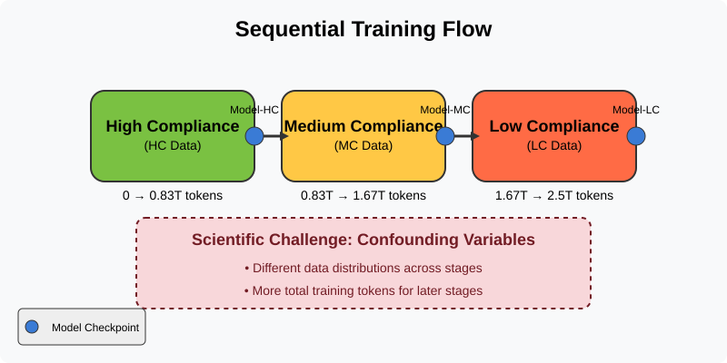
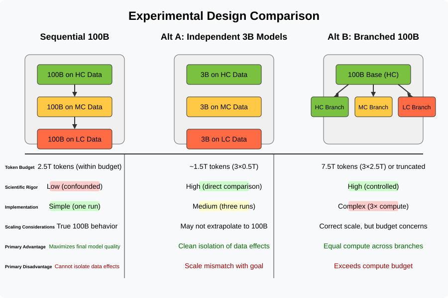
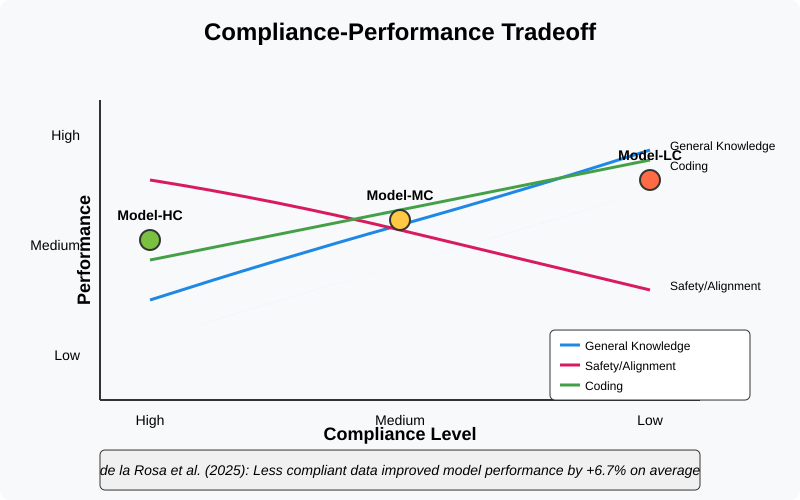
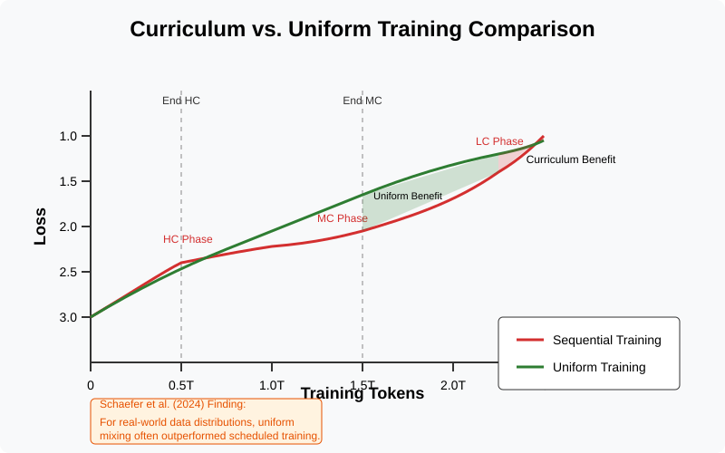
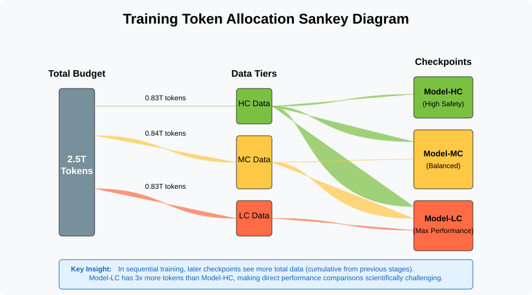
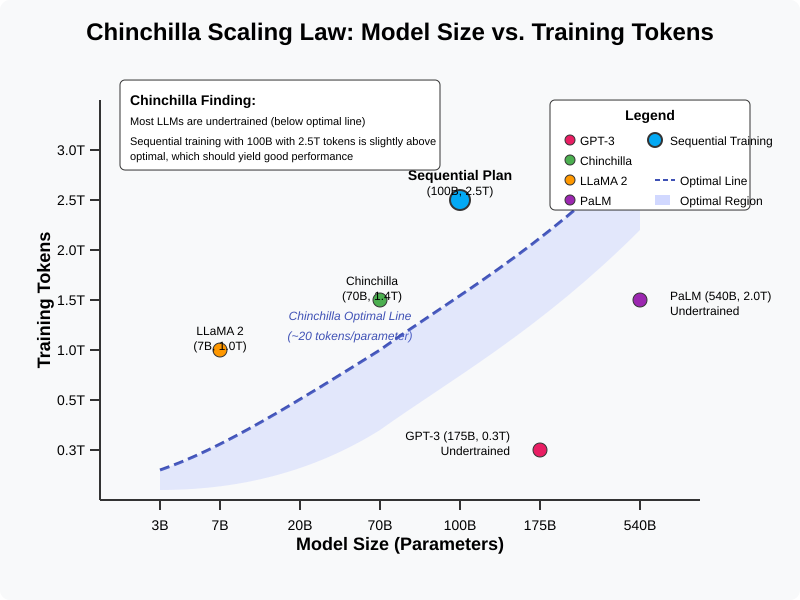
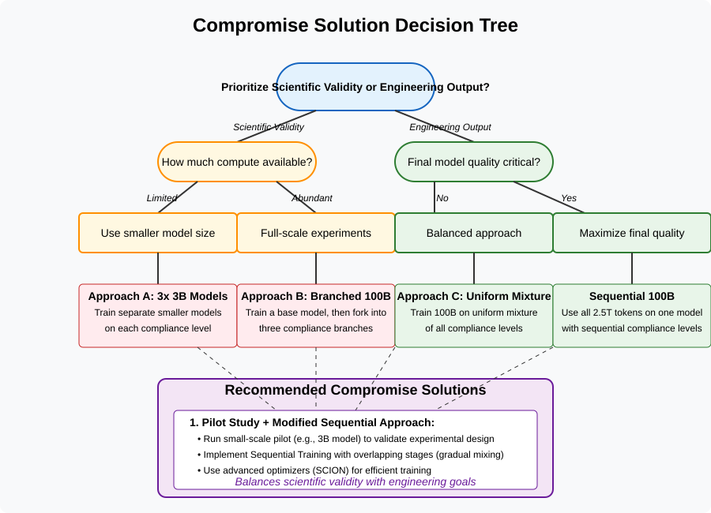
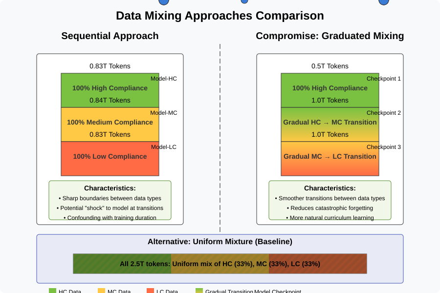

Evaluating Sequential Data Scheduling for Compliance-Performance Tradeoffs
Analysis of a 100B Parameter LLM Training Plan
Main Proposal: Sequential Training Flow

Sequential Training Proposal: Summary
Goal: Study compliance-performance tradeoff for a 100B LLM within a 2.5T token budget.
Method: Sequential training across three data tiers:
High Compliance (HC: 100% filtered)
Medium Compliance (MC: ~50% filtered)
Low Compliance (LC: minimally filtered)
Checkpoints: Save intermediate models (Model-HC, Model-MC, Model-LC) after each stage.
Core Question: How does relaxing data filtering affect model performance and capabilities?
Scientific Rigor Challenges
Confounding by Training Time: Later stages (MC, LC) receive more cumulative training tokens/steps than earlier stages (HC).
Performance differences (e.g., Model-LC vs. Model-HC) could be due to more compute, not just the change in data compliance level.
Makes attributing performance changes solely to data compliance difficult. Causal claims are risky without controls.
Need for mitigation: baselines (uniform mix), ablations, or alternative designs to isolate data effects.
Alternative Experimental Designs

Alternative Designs: Summary
A. Independent Small Models (e.g., 3B): Train separate small models per compliance level.
(+) High data isolation, potentially lower compute per model.
(-) Scaling differences; may not predict 100B behavior.
B. Shared Foundation + Divergence: Train base on HC, then fork and continue train copies on HC, MC, LC separately.
(+) Controls for compute & initial state; high data isolation post-fork.
(-) High total compute cost (e.g., 3x budget if each branch gets 2.5T tokens). Under-training risk if budget split.
C. Uniform Mixture Baseline: Train one model on a shuffled mix of all data.
(+) Simple, provides direct comparison for sequential scheduling effect.
(-) Doesn't isolate specific compliance level effects.
Tradeoffs: Alternatives offer better scientific control but face compute/scaling challenges. Sequential design maximizes compute on one model but confounds variables.
The Core Tradeoff: Compliance vs. Performance

Compliance-Performance Tradeoff: Summary
Hypothesis: There's an inherent tradeoff between strict data compliance (filtering) and raw model performance/capabilities.
Evidence (de la Rosa et al. 2025): Including high-quality copyrighted (less compliant) data significantly improved a 7B model's performance (+6.7%). Conversely, overly filtered/specific data (fiction) slightly hurt general performance (-1.4%).
Implication: Less filtered (LC) data likely boosts performance metrics (knowledge, perplexity) but may reduce safety/alignment. Highly filtered (HC) data may yield safer but less capable models.
The experiment aims to quantify this relationship for the 100B model.
Data Quality Across Compliance Tiers
High Compliance (HC): Strictly filtered. Safe, potentially biased (e.g., formal, Western sources), less diverse, risk of informational paucity.
Medium Compliance (MC): Moderately filtered. Mix of quality, broader domains (forums, some code), improved capability expected, mild safety risk increase.
Low Compliance (LC): Minimally filtered. Richest data (web text, copyrighted material), likely maximizes raw performance but introduces safety/bias/ethical risks.
Challenge: Compliance levels likely correlate with other data differences (domain, style, quality). Changes in model performance might stem from these factors, not just filtering rules. Careful data characterization is needed.
Curriculum Learning: Sequential vs. Uniform

Curriculum Learning: Evidence & Implications
Sequential training (HC→MC→LC) is a form of curriculum learning.
Evidence (Schaefer et al. 2024): Studied language scheduling in multilingual models.
Real languages: Gains inconsistent; uniform mixing often performed best overall. Schedules could create performance tradeoffs between languages.
Implication for Compliance: The proposed HC→MC→LC sequence might not outperform a uniform mix. It could tilt performance (e.g., better initial safety, better final capability) but potentially at a cost to overall balance.
Recommendation: Benchmark sequential approach against a uniform mixture baseline.
Training Token Allocation

Token Allocation: Implications
The Sankey diagram visually confirms the cumulative token effect in the sequential design.
Model-HC sees only the initial tranche of tokens (e.g., ~0.83T if split evenly per stage).
Model-MC sees tokens from stage 1 + stage 2 (e.g., ~1.67T total).
Model-LC sees all 2.5T tokens across all stages.
This reinforces the confounding factor: Comparing Model-HC, MC, and LC directly compares models trained on different total amounts of data.
Model-HC will likely be significantly under-trained for a 100B model compared to Model-LC. Evaluating intermediate checkpoints requires careful interpretation.
Scaling Law Considerations: 100B Model, 2.5T Tokens

Scaling Laws & Budget: Is 2.5T Tokens Enough?
Chinchilla Scaling Law Guideline: Optimal training involves ~20 tokens per model parameter.
For a 100B parameter model, this suggests an optimal data size around ~2.0 Trillion tokens.
Budget Analysis: The allocated 2.5T tokens is slightly above the Chinchilla optimal point.
Conclusion: 2.5T tokens should be sufficient to train the 100B model effectively, avoiding under-training (unlike many previous large models). Performance should be good, assuming efficient training.
Efficiency is Key: Need stable training. Consider advanced optimizers (e.g., SCION [cite: 2502.07529v1]) for hyperparameter transfer and large batch stability.
Finding a Balance: Compromise Approaches

Compromise Approaches: Summary
Goal: Balance scientific rigor with engineering goals and budget constraints.
Recommendations:
Pilot Study: Test sequential vs. alternatives on smaller models (e.g., 3B or 10B) first.
Incorporate Mixing: Instead of hard stages, use overlapping phases or gradually introduce MC/LC data into the mix.
Reset Optimizer States: Consider resetting optimizer or LR schedule at transitions to make stages more distinct.
Leverage Advanced Optimizers: Use SCION [cite: 2502.07529v1] for stability and efficient hyperparameter tuning.
Continuous Evaluation: Monitor performance/compliance throughout; consider early stopping or safety fine-tuning.
Thorough Documentation: Detail data composition at each stage.
Comparing Data Mixing Strategies

Data Mixing Strategies: Summary
Sequential Approach: Distinct stages (HC -> MC -> LC) with sharp boundaries. Simple but risks model shock at transitions and confounds data type with training duration.
Graduated Mixing (Compromise): Smoother transitions between data types (e.g., pure HC, then gradual HC->MC mix, then gradual MC->LC mix). Reduces potential for catastrophic forgetting and offers a more natural curriculum. Aligns with compromise recommendations.
Uniform Mixture (Baseline): Mix all data (HC, MC, LC) uniformly throughout training. Serves as a critical baseline to evaluate whether sequential or graduated mixing provides actual benefits over simple mixing.
Conclusion & Next Steps
The Sequential Training proposal addresses a critical question about compliance-performance tradeoffs.
The sequential design is practical but faces scientific challenges (confounding variables).
Alternatives offer rigor but have higher costs or scaling issues.
The 2.5T token budget is adequate for the 100B model based on scaling laws.
Recommendation: Proceed with the 100B training, but incorporate elements to improve scientific validity:
Run a uniform mixture baseline alongside (perhaps smaller scale if budget limited).
Consider smoother transitions (mixing) instead of hard stages.
Utilize advanced optimizers and continuous evaluation.
Conduct a small-scale pilot if feasible to de-risk the design.
This balanced approach maximizes learning from the available compute budget.